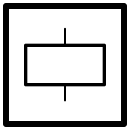
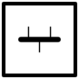
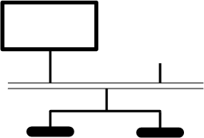
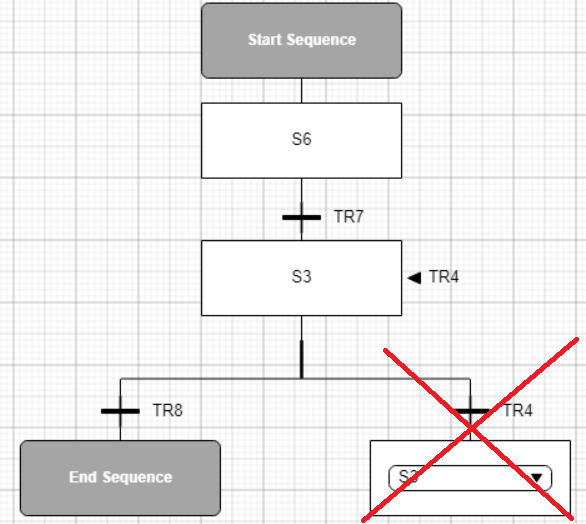

A Sequence Diagram is the chart attached to a state of a Procedural CAT. It describes the logic using sequential control.
The sequence flows through two main kinds of graphic:
A step, a processing unit that contains the actions that occur when it is actived or deactivated.
A transition, the gate whose opening activates the next step.
The first time a state is double-clicked, two elements are automatically drawn:
An initial step (Start Sequence). Usually it does not contain any action; it must be followed by one regular step (see hereafter).
A final step (End Sequence). It must be preceded by one transition (directly or through a jump) or several transitions.
The minimum chart includes between these two elements a regular step that does not need any event to be active, then a transition.
The current tab (CAT) and sub-tab (sequence) headers stand out on a white background. The upper left corner features a bar with seven icons, one by smart graphic type:
|
<Procedural CAT1 name> |
<Procedural CAT2 name> |
<Procedural CAT3 name> |
|
|
<Sequence 1 name> |
<Sequence 2 name> |
||
|
SEQ |
╤ ╧ |
||
To insert a graphic, drag a tool and drop the icon onto the space.
|
Icon |
Description |
Result |
Valid connections |
|
 |
Step, a state in the flow chart . |
A rectangle appears. The default label is Sn. You can edit it. |
1 ... n transitions before and after. See further. |
|
Transition ruled out by a Boolean expression allowing the flow to move from previous step (source of the transition) to the next step (destination step of the transition). See Transition Editor. |
A transition appears. The default label is TRn. You can edit it. |
||
|
Step and transition |
As in the preceding rows, but they are already connected. |
||
|
Extensible divider into parallel paths (Simultaneous branching or AND branching). All paths execute and must finish before the sequence can move on. |
A double bar with two output connectors appears. |
Recommendation: 1 transition before. A connector can stay free. |
|
|
 |
Extensible collector of parallel paths (End of simultaneous branching or AND branching) |
A double bar with two input connectors appears. |
It can also be followed by several transitions (see further EXCLUSIVE PATHS):
 A connector can stay free, but the same count of free connectors as in the corresponding divider is required. |
|
Jump (forward or backward). It includes the preceding transition. |
A selection drop-down appears. The destination step must be in the same parallel branch and can not be the same as the source step (no jump to itself). |
The destination step must be in the same parallel branch (or in the main one) and cannot be the preceding one (infinite loop) except if another path of an OR branching can take over (see chart further). The destination cannot be in a simultaneous branch as the counts of engaged connectors differ. |
|
|
Comments |
Enter the text in the extensible rectangle. |
By default, the divider and the collector are designed for two paths.
To add a connector:
Select the graphic. This reveals a black arrow on both end of the double bar.
Click either arrow. This extends the double bar and adds a connector on the clicked side.
To remove a connector when more than two are present:
Select the graphic. This reveals the black arrows.
Click a black arrow pointing inwardly. This removes a connector on the clicked side.
If relevant, reconnect the disconnected path to an innermost connector.
Use the mouse left button to draw the flow between the graphics.
During the procedure, the control appears green.
BASIC CONNECTION
|
Step |
Operation |
Result |
|
1. |
Hover the source graphic or the destination graphic. |
This reveals the upstream and downstream connectors. |
|
2. |
Hover the in-between connector. |
The cursor turns into a hand. |
|
3. |
Draw a line to the other graphic connector to hook it. |
|
|
4. |
Release the mouse. |
If the connection is allowed, the line remains visible. |
|
5. |
Move either graphic in case the connecting line is broken. |
EXCLUSIVE PATHS (Alternative sequence or Selection branching or OR branching)
|
Step |
Operation |
Result |
|
1. |
Lay out as many transitions as needed branches. |
|
|
2. |
Connect a transition to the preceding step. |
|
|
3. |
Connect another transition to the preceding step. |
A horizontal bar connects the branches .A vertical segment with a thick stroke connects it to the preceding step. |
|
4. |
Move the segment horizontally to straighten a broken line, vertically to adjust the distances. |
|
|
5. |
Develop the branches. Each one must end with a transition (or a jump). |
|
|
6. |
Connect either last transition to a step (possibly the final one). |
|
|
7. |
Connect the other last transition to the same step as just above. |
A horizontal bar connects the branches .A vertical segment with a thick stroke connects it to the preceding step. |
|
8. |
Move the segment horizontally to straighten a broken line, vertically to adjust the distances. |
The transitions are tested from left to right. The first passing one is chosen, whereas the others are ignored. The control flows through the first passing branch.
Notice that this sequence is not valid because there is a jump to the preceding step:

In contrast with the AND bars, the OR bars feature one line.
An OR branching can succeed an AND collector.
HANDLING & VIEWING
Selecting graphic(s) is needed to move or delete them.
|
Operation |
Result |
|
Click on graphic |
Selects the graphic. |
|
Ctrl + click on graphics |
Selects all the clicked graphics. |
|
Ctrl A |
Selects all the graphics in the chart. |
|
Del |
Deletes the selected graphic. Start Sequence and End Sequence cannot be deleted. |
|
Scroll wheel up |
Scrolls the chart up. |
|
Scroll wheel down |
Scrolls the chart down. |
|
Ctrl + Scroll wheel up |
Zooms in. |
|
Ctrl + Scroll wheel down |
Zooms out. |
|
Shift + Scroll wheel up |
Scrolls the chart left. |
|
Shift + Scroll wheel down |
Scrolls the chart right. |
To select adjacent graphics, press and hold down (more than 1 second) the mouse left button to draw a rectangle that encloses the chosen graphics.